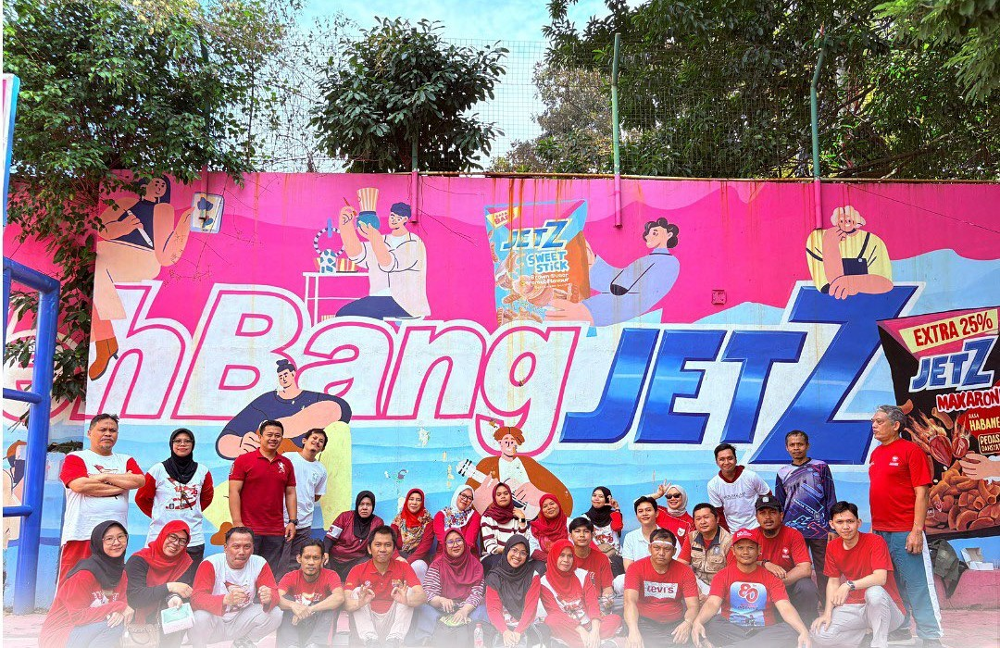

Kegiatan Akan Berlangsung
Kegiatan Telah Berlangsung


Lomba 17-an HUT RI ke-79
Diposting: 18 Agustus 2023
SMAN 3 Bandung melaksanakan upacara memperingati Hari Kemerdekaan Republik Indonesia ke-79.
Baca SelengkapnyaHari Batik Nasional 2025
Diposting: 3 Oktober 2025
SMAN 3 Bandung memperingati Hari Batik Nasional dengan mengenakan batik dan mengadakan berbagai kegiatan budaya di sekolah.
Baca SelengkapnyaTur Budaya 2024
Diposting: 20 April 2024
SMAN 3 mengadakan tur budaya menuju Bali untuk mengenal budaya lain sekaligus sebagai pelepasan dari tugas yang berat di SMAN 3 Bandung.
Baca Selengkapnya